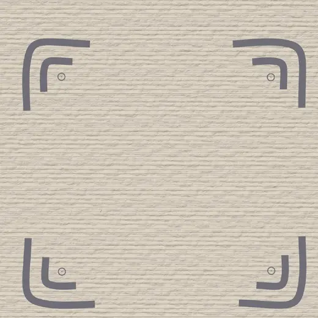

Primeira obra de Rozália Del Gáudio
Permaneça inteiro durante as travessias.
Um livro sobre presença, esperança e aquilo que sustenta a vida quando tudo desacelera.
Uma obra para ser sentida
Não é um livro sobre doença. É um livro sobre presença.
Entre o medo e a esperança, Rozália transformou pensamentos, memórias e fotografias em um registro íntimo sobre o que permanece.
Cada página oferece uma pausa: para respirar, contemplar e reencontrar o essencial.
“Escolha uma página. Uma fotografia. Uma frase.”
E permaneça o tempo que precisar.
A experiência de leitura
Abra em qualquer página.
- 01 Reflexões sobre presença e sentido
- 02 Fotografias autorais em diálogo com os textos
- 03 Fragmentos de memória, afeto e contemplação
- 04 Uma leitura leve, profunda e não linear
Um encontro consigo
Este livro é para quem…
Atravessa mudanças e precisa reconhecer a própria força.
Busca significado sem respostas prontas.
Deseja viver com mais presença e menos pressa.
Encontra abrigo na espiritualidade, na gratidão e nos afetos.
Para quem ainda encontra beleza nos detalhes.
de presença em meio à mudança

Como o livro nasceu
Da travessia, um lugar de permanência.
Ao longo de 414 dias de tratamento oncológico, Rozália reuniu pensamentos, memórias, fotografias e reflexões. O que começou nos espaços silenciosos entre uma consulta e outra encontrou forma neste livro.
A experiência está na origem da obra, mas não limita sua mensagem. O livro fala sobre aquilo que há de mais humano em todos nós: presença, esperança, gratidão e sentido.
Conhecer a edição especialEdição especial
Faça parte do nascimento desta obra.
Garanta seu exemplar na pré-venda e ajude esta mensagem a encontrar novos leitores e novas travessias.
- Formato
- Livro impresso
- Edição
- Especial de pré-venda
- Condições
- Confirmadas no atendimento
Dúvidas frequentes
Antes de garantir seu exemplar.
As informações de pagamento e envio são confirmadas pessoalmente antes da finalização.
Como funciona a pré-venda?
O atendimento confirma as condições atualizadas, registra seu pedido e orienta sobre as próximas etapas.
Qual é o valor e a forma de pagamento?
Valor e opções de pagamento são informados diretamente pelo WhatsApp antes da confirmação do pedido.
Como será feita a entrega?
As opções de envio, retirada e eventuais custos de frete são confirmados conforme sua localização.
Preciso ler o livro em sequência?
Não. Você pode abrir em qualquer página e permanecer em uma fotografia, frase ou reflexão pelo tempo que precisar.
O livro é sobre o tratamento oncológico?
O tratamento faz parte de sua origem, mas a obra fala principalmente sobre presença, esperança, afeto e sentido.
Escolha uma página.
Uma fotografia. Uma frase.
E permaneça o tempo que precisar.